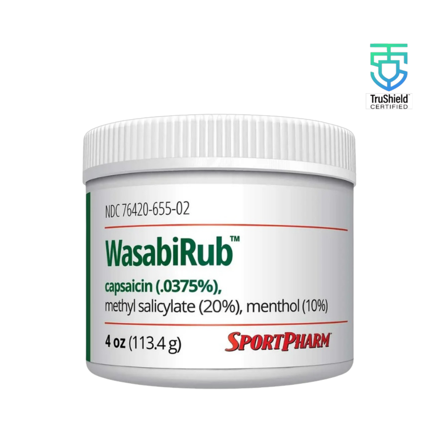

The origin
From professional clubhouses to yours.
WasabiRub was developed by Robert Nickell, the first sports pharmacist for the U.S. Olympic Team. It first found a following with professional league pitchers in the late ’90s, then spread through college, minor league, and high school locker rooms.
“It goes on cool. As your body warms up, so does the rub.”
Today, that same pharmacist-formulated blend is made for athletic trainers, sports medicine professionals, and active individuals who take recovery seriously.
